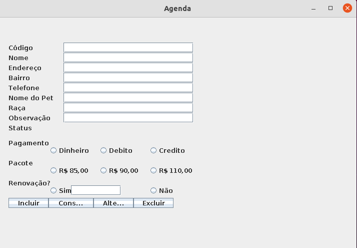
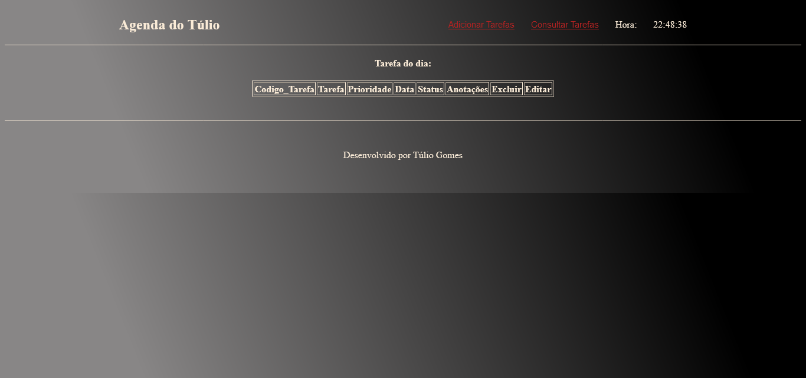
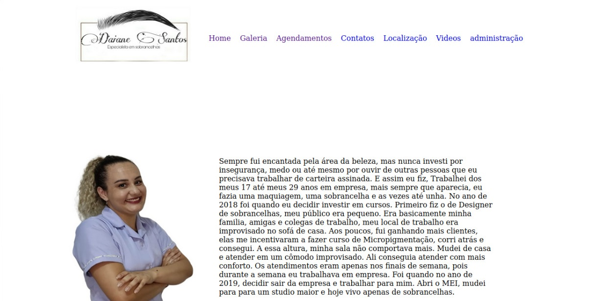
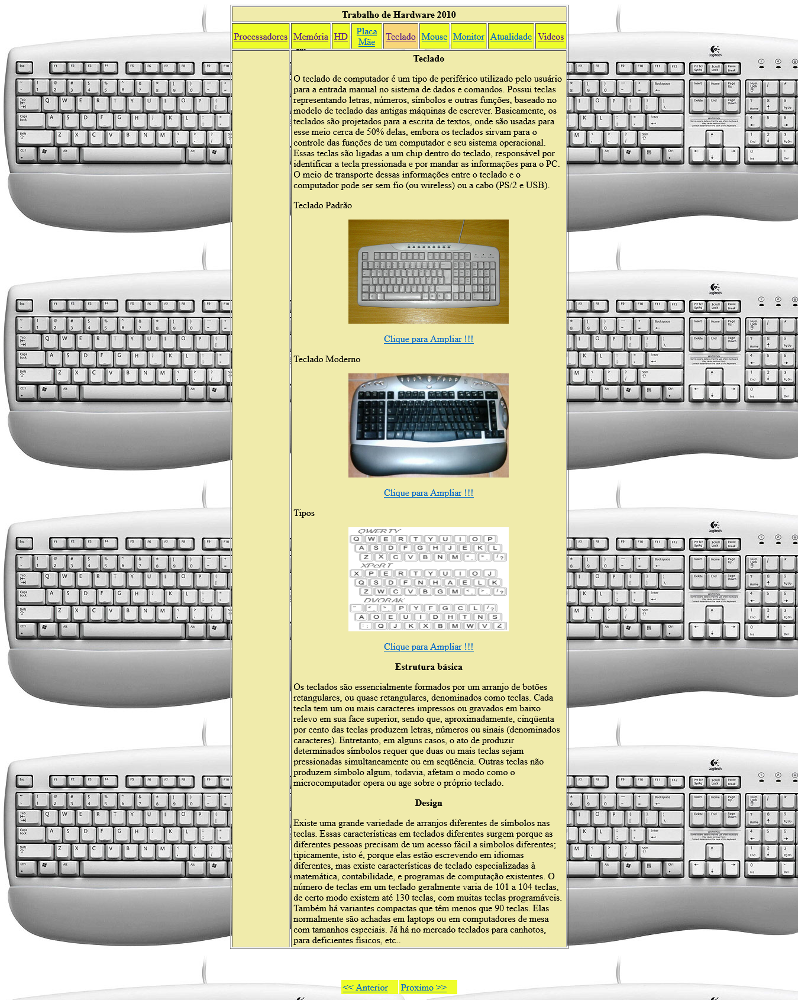
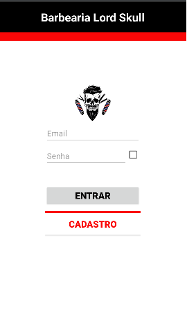

Quem sou eu
Sou o Túlio Gomes, formado em
Analise e desenvolvimento de Sistemas (Tecnologo).
concluído em 2021.
Conhecimentos obtidos
- PHP
- Java
- Javascript
- CSS
- Python
- C
- C++
- JSP
- Android
Portfólios
Esse projeto foi desenvolvido com a missão de cadastrar os serviços para loja de Petshop. Desenvolvida com a linguagem de programação Java

Uma agenda de tarefas. desenvolvida com HTML, CSS, Javascript e PHP, para cadastrar as tarefas
Agenda de tarefas para um salão, projeto da faculdade. Desnvolvida HTML, CSS, Javascript e PHP
Primeiro site que eu desenvolvi, utilizando HTML e Javascript
Aplicativo para celular Android, com a linguagem Java e utilizado o Android Studio
Estudos
Para me manter atualizado na área de desenvolvimento, utilizo livros, videos aula no You Tube e uns perfis no instagram que auxilia no aprendizado
Segue o link de uns perfis que acompanho
- Lorene Fadel
- Dicas sobre Python, Inteligência artificial e Engenharia da computação
- Larissa | Dev.net
- Dicas de códigos HTML, CSS e Javascript
- João. Dev
- Dicas essenciais para se tornar o excelente desenvolvedor
- Steph | Dev Backend
- Dicas para quem deseja começar a carreira como desenvolvedor
- CodeWithtest
- Dicas envolvendo a Engenharia da computação e o dia-a-dia do desenvolvedor
- Thaissadami
- Com dicas sobre desenvolvimento mobile para iOS, UI/UX Designer
- Adriana.Saty
- Apresenta dicas de códigos em CSS, Javascript e HTML e mostra a sua experiência como desenvolvedora
- Bia_Dev
- Dicas de códigos HTML, CSS e Javascript
- Bia.codes
- Dicas de tecnologia e de trabalhos para o exterior
- Laricodes
- Dicas de tecnologia e linguagem C
- Kipper.dev
- Contéudos sobre programação, tecnologia e carreira
- Isabela.kreutz
- Dicas de inglês para alcançar a fluência
- Inglês Caseiro
- Dicas para aprender inglês em casa